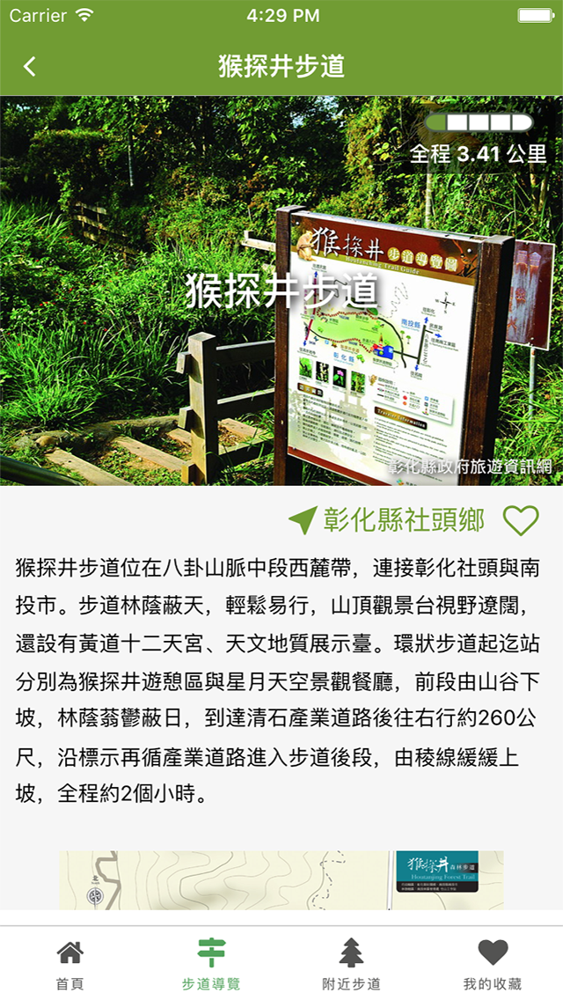

-

-

-

-

-


任何人都能輕鬆快速地找到適合自己的步道，只需要點選欲尋找的區域和類型，我們能立即篩選出最適合你的步道。想要尋找中部的郊山嗎？沒問題！步道一指通讓你上山無懼、下山寫意！

我們透過精準的 GPS 定位，讓使用者在家就可規劃行車路線，最完整豐富的步道資訊盡收在你眼前！
在台灣步道一指通，任何人都可以收藏自己喜愛的步道，分享台灣最美的山林景觀！

office@trunk.studio
(04) 2201-9020
創科資訊團隊